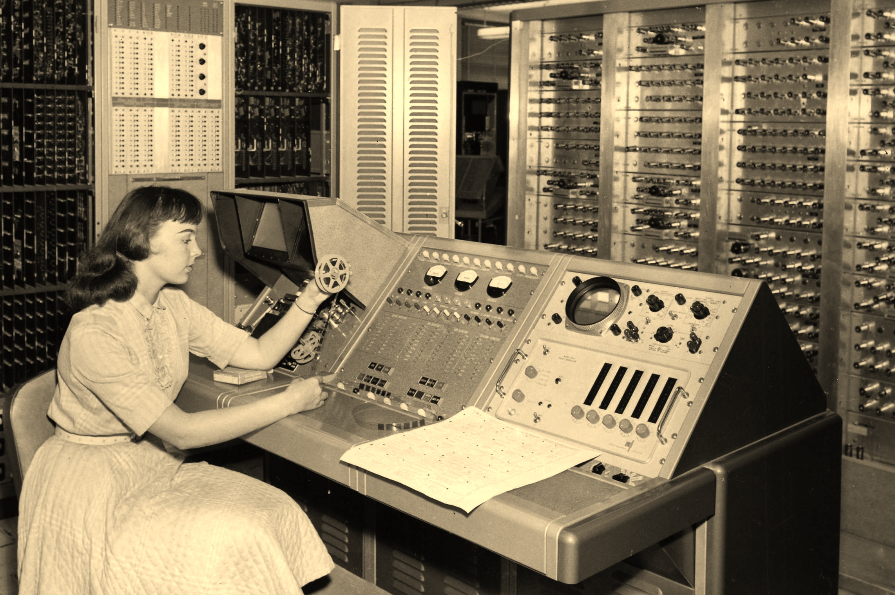

Introduction to OS Development
This section introduces you to the OS development world, it's basic details and how to go about developing an OS in general, before actually starting the development of an OS, which is done in the next section (which also teaches you theory on how machines/chips work at the lowest levels).
In this section we have 6 pages:
- Programming Computers with Programming Languages:
This section introduces you to the various programming languages required to develop at the OS level. - The C Programming Language:
This section talks about the various features of C language you need to know to code OSes effectively. - About Operating Systems and their Development:
Here, you get to know a little about what OSes are and how they are built at a very basic level. - Getting Setup for OS Development:
This section familiarizes you with the OS dev tool chain and helps you get it setup. - The History of OS Development:
Here, you get to see how OSes have evolved over time, acquiring the features that we see today. - Basic Concepts of an Operating system: This section introduces you to all the basic concepts/features of a modern operating system.
Note
This series uses C and x86 Assembly Language. It is very important to have a good understanding of both of these languages before moving on. This section includes a review of both of these languages. (Yeah, they are pretty old and used at a basic level in all machines).
